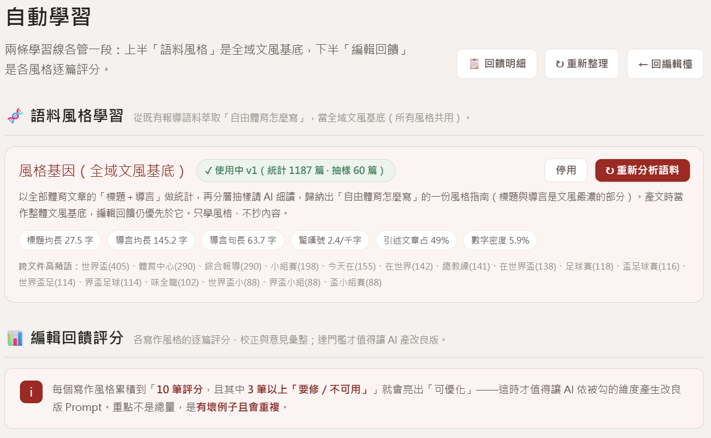

自由電子報 AI 組報實驗計畫
— 從等待讀者到主動發送
體育
＋
財經
雙頻道
不是把新聞交給 AI 重寫
而是把素材轉化為有觀點、可持續出刊的內容產品。
而是把素材轉化為有觀點、可持續出刊的內容產品。
01 · 成果速覽
AI 實驗過程
A · 6 週從 0 到可出刊
選題分群➜
AI 融合➜
去 AI 味➜
查核校正➜
組報➜
一鍵送電子報系統
B · AI 標註的 8 種受眾需求
事實型
告訴我發生什麼
Update me
Update me
重大通知
Alert me
Alert me
行動型
給我可用素材
Support me
Support me
連結同好
Connect me
Connect me
脈絡型
解釋給我聽
Educate me
Educate me
給我觀點
Give me perspective
Give me perspective
情感型
娛樂我
Entertain me
Entertain me
啟發我
Inspire me
Inspire me
C · 會學習的系統
編輯評分回饋
↓ 反饋
AI 產生優化版 Prompt （人審核上線）
↓ 進化
語料萃取「自家文風」
↻ 逐篇評分回流，持續優化
02 · 學到了什麼 ①
4 個關鍵
內容與 AI① 原創價值，取決於「來源品質」
快訊式文章即使透過 AI 重寫也難有深度，該換題就換題。
② 去 AI 味是持久戰
必須依賴編輯持續回饋，推動系統自動化學習。
③ Prompt 不是魔法，是編輯經驗的翻譯
好的規則，全都來自編輯親手抓到的「真實壞例子」。
④ AI 最弱的是「語感」
內容編輯是最後、也是最重要的終極守門員。
03 · 學到了什麼 ②
痛點 與 修正
痛點 → 修正1
操作太複雜
Prompt 選擇困難
Prompt 選擇困難
→
✔ 修正
一路簡化為「選題 → 評分 → 定稿」三步；全自動化標記與風格選擇，只顯示單一最佳 Prompt。
2
說不出哪裡不好
（1-3 星評分失效）
（1-3 星評分失效）
→
✔ 修正
維度式評分 👍／🔧／❌，勾選具體維度＋「原句 → 建議改成」，壞例子直接轉化為訓練料。
3
評分機制繁瑣，降低意願
→
✔ 修正
改用直覺「點選」標籤（如：開場沒破題、AI 味太重、斷句怪）。
4
產出孤島，無法進步
→
✔ 修正
融合文章回流比對，定時與真實記者文章比對優化，加入自動學習閉環。
04 · 展望
下一步行動
01
導入讀者成效數據
開信率接進系統
→ 主旨 A/B 測試
→ 讀者行為回饋自動學習
（從「編輯評分」擴到「讀者投票」）。
→ 主旨 A/B 測試
→ 讀者行為回饋自動學習
（從「編輯評分」擴到「讀者投票」）。
02
個人化起步
興趣分眾派發
（讀者興趣標籤已就緒）。
（讀者興趣標籤已就緒）。
03
降低門檻
讓更多編輯上手
（操作簡報與 SOP ）。
（操作簡報與 SOP ）。
05 · 總結
最大的收穫
AI 做繁瑣整理，編輯做價值判斷
編輯從「撰稿者」升級成「判斷者」
編輯從「撰稿者」升級成「判斷者」
實證：一人＋AI 建立整套系統
短短 6 週，從計畫書到雙頻道成功出刊，並內建自動學習閉環。
「AI 不會取代編輯；
會使用 AI 的編輯，將能重新掌握內容樣貌與出刊節奏。」
會使用 AI 的編輯，將能重新掌握內容樣貌與出刊節奏。」
成果展示（一）
本期編輯檯 · 選主題
成果展示（二）
自動學習
THANK YOU
報告完畢
敬請指教
自由電子報 AI 組報實驗計畫